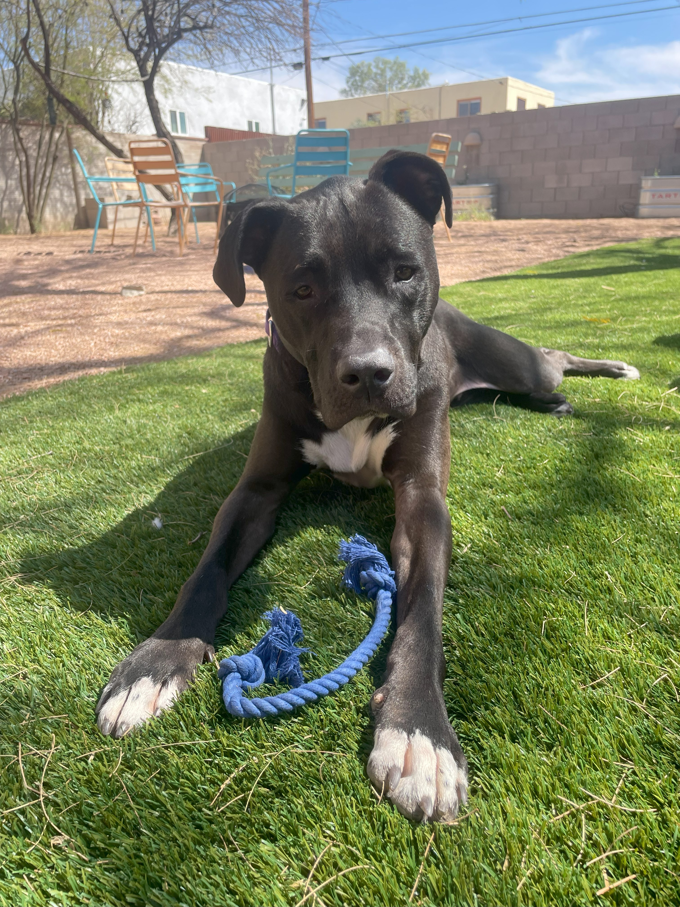
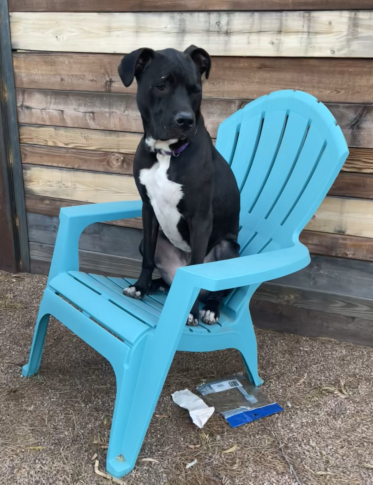
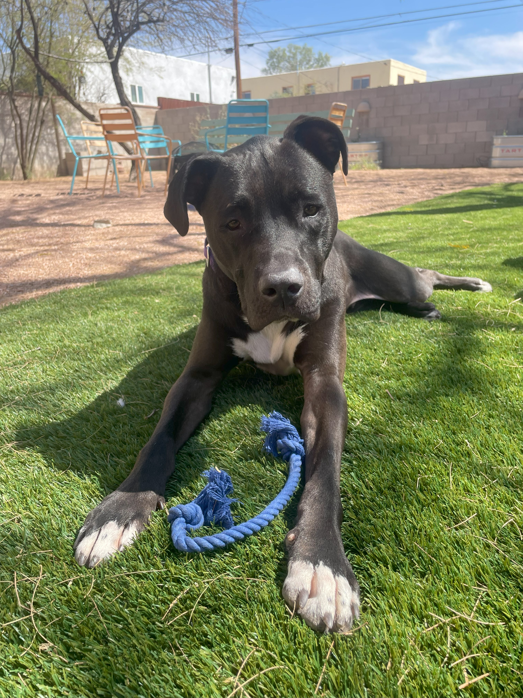
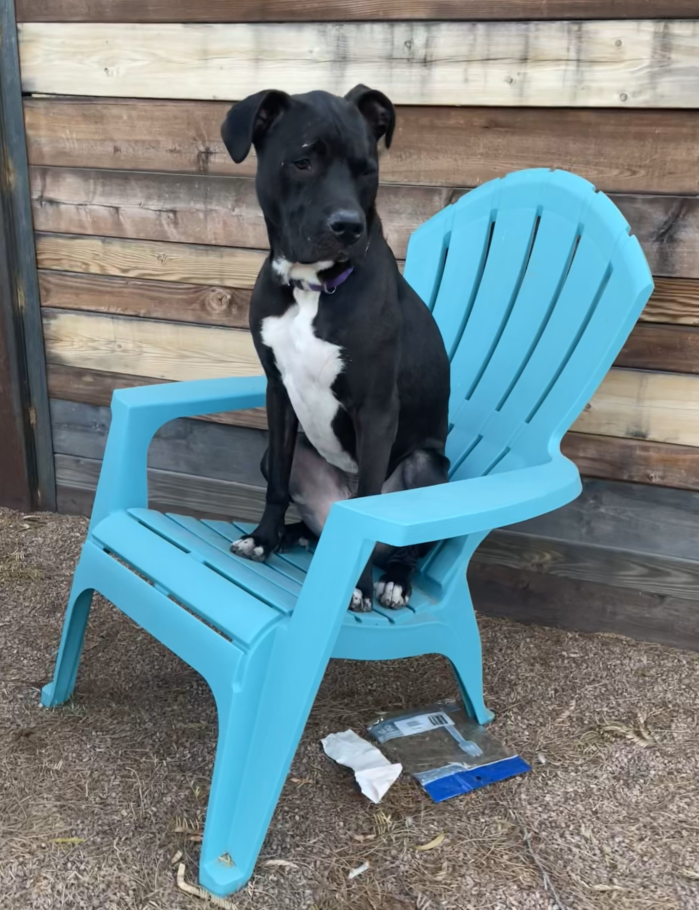
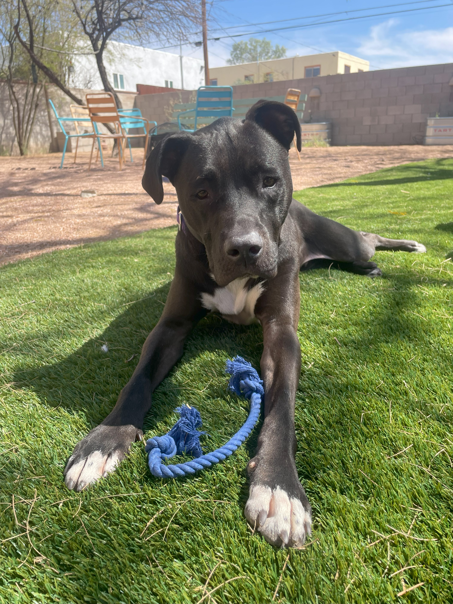
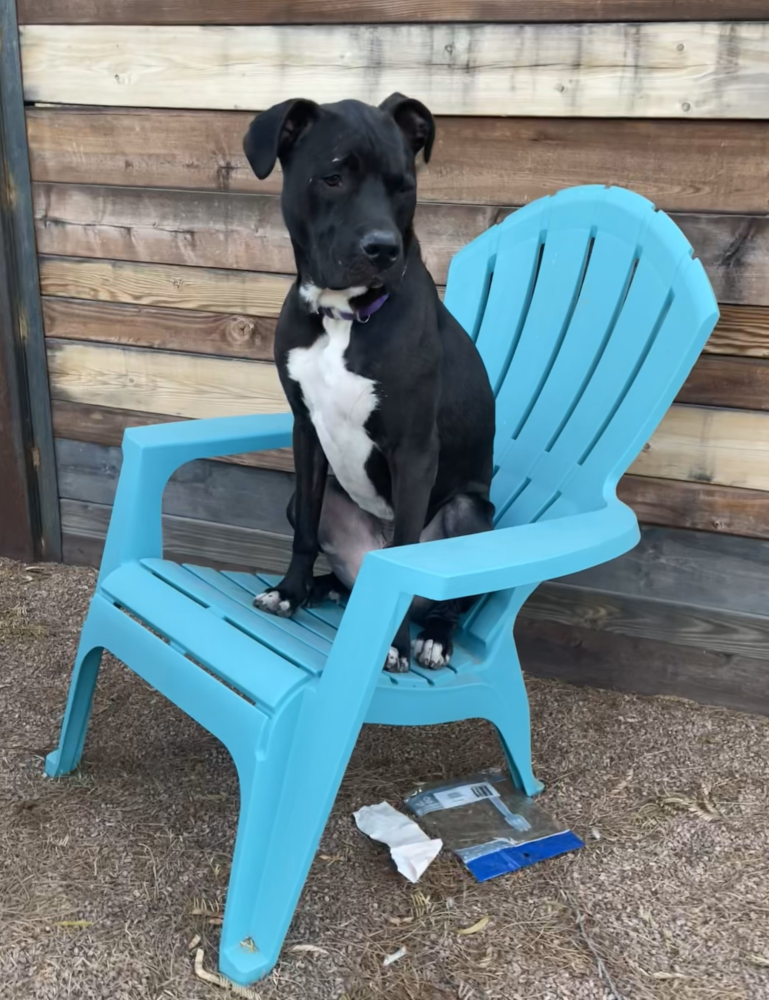

Hi! I’m Beau (my full name is "Beaumont", but I respond to Beau), a 3-year-old neutered male dog who’s full of energy and love. I enjoy car rides, going for walks, and getting my exercise in by being a great runner and walker. I’m leash trained and love playing games like tug-of-war with my toys! I'm a friendly guy who will say hello to anyone who looks at me!
Although I can get excited at first, I calm down very quickly and settle into a relaxed, affectionate mood. I’m like a puppy at heart, but I know how to be a sweet, chill companion when I need to be. I’m also a huge snuggler — if you’re sitting down, you’ll find me right next to you, resting my head on your lap!
I’m house-trained, house-broken, and non-destructive. I can be left alone in a room and will sleep peacefully while you’re gone. I’ve been working on crate training, and I’m making progress, though I’m not fully trained yet. I love to sunbathe in warm spots and enjoy treats (they’re my favorite!).
Although I’m still learning, I’m a loyal and loving companion who just wants to be close to you. I may be young at heart, but I promise, I’m the perfect mix of playful and relaxed! I also have no current health conditions — I’m just looking for someone to love me as much as I’ll love them.


If you’re interested in adopting Beau, please contact Megan (his foster mom) at megzup23@gmail.com. Beau cannot wait to find his forever home!
Beau is fostered from Pima Animal Care Center. If you want more information on Beau, please visit the website at https://www.pima.gov/2233/Pima-Animal-Care-Center-PACC. My ID Number is A860765.